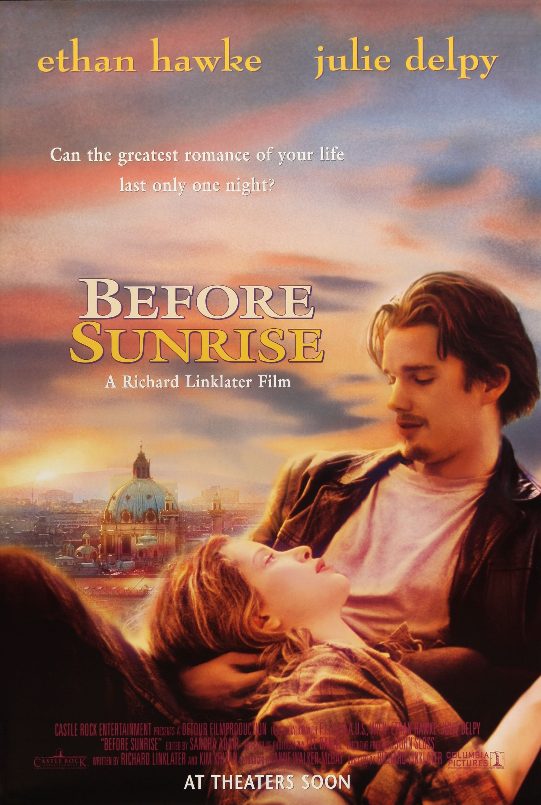
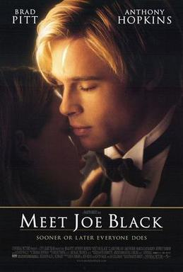

Before Sunrise es la primera película de la trilogía de Richard Linklater, lanzada en el año 1995. La historia sigue a Jesse y Céline, dos jóvenes que se conocen en un tren que viaja de Viena a París.
La película destaca por su diálogo natural y realista, así como por la química entre los actores. Explora temas como el amor, la existencia y la búsqueda de sentido en la vida.
10/10

Meet Joe Black es una película de 1998 dirigida por Martin Brest. La historia sigue a Joe Black, un angel que aparece en la vida de un hombre rico y poderoso para enseñarle lecciones sobre la vida y la muerte.
La película es conocida por su mensaje profundo y la actuación de los protagonistas, especialmente de Anthony Hopkins y Brad Pitt.
9.5/10